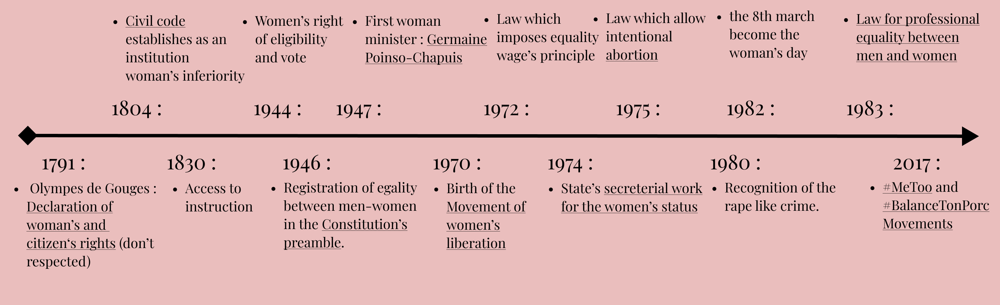

The men’s role in feminism, forgotten activists
When we talk about feminism, we often think about women who fight for women. However men have too participated in their emancipation.
Feminism is an important concern in our actual society and will be even more important to build the one of tomorrow. Some feminists, women as well as men have influenced this concept which stays hard to grasp. We will see across differents articles some sides less unknow about feminism, but also famous figures who have marked it and continue to make progress it.

When we talk about feminism, we often think about women who fight for women. However men have too participated in their emancipation.
Michelle Obama is a stakeholder about actual feminism. Very involved, she does a lot of speeches to promote feminism’s values all around the world.

Hidden Figures by Theodore Melfi analyses feminism with subtlety. We observe 3 women confronted with racism and sexism of the 60’s society.